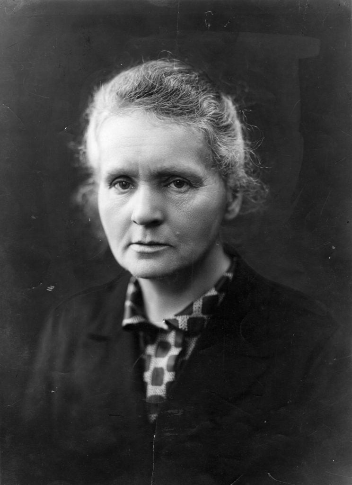

ဒီ (၃) ယောက်လုံးဟာ နိုဘယ်ဆုရှင်တွေ ဖြစ်ကြပါတယ်။ သူတို့ (၃) ယောက်ရဲ့ စုစုပေါင်း နိုဘယ်ဆု အရေအတွက်ဟာ (၄) ဆုတိတိ ရှိပါတယ်။ ဒါတောင် ပုံထဲက သမီးငယ်လေးရဲ့ အမျိုးသား ရတဲ့ နိုဘယ်ဆုပါ ထည့်ပေါင်းမယ်ဆို စုစုပေါင်း (၅) ဆုတောင်တဲ့ဗျာ။
အော် ဒါနဲ့ ဒီပုံထဲက သူတွေ နာမည်ရော နဲနဲ စဉ်းစားလို့ ရပြီလားဗျ။ ပုံထဲက မိခင်လုပ်တဲ့ အမျိုးသမီးကြီးကိုတော့ သိကြမယ် ထင်ပါတယ်။ ရေဒီယမ်ကို ရှာဖွေတွေ့ရှိ ခဲ့တဲ့ အမျိုးသမီးကြီးလေဗျာ။
ဟုတ်ပါတယ်။ ဒီ (၃) ယောက်ဟာ နာမည်ကျော် ကျူရီ မိသားစုပဲ ဖြစ်ပါတယ်။ မိခင်ဖြစ်တဲ့သူက မာရီကျူရီ (Marie Curie) ဖြစ်ပြီး ဖခင်ဖြစ်သူကတော့ ပီယဲကျူရီ (Pierre Curie) ဖြစ်ပါတယ်။ သမီးလေးကတော့ အိုင်ရင်းကျူရီ Irene Curie ဖြစ်ပါတယ်။
မာရီကျူရီ (Marie Curie)
မာရီကျူရီဟာ ပိုလန်လူမျိုးဖြစ်ပြီး နောက်ပိုင်း ပြင်သစ်နိုင်ငံသား အဖြစ်ခံယူခဲ့ပါတယ်။ သူမကို ၁၈၆၇ ခုနှစ်မှာ ပိုလန်နိုင်ငံ ဝါဆောမြို့မှာ မွေးဖွားခဲ့ပါတယ်။ သူမဟာ အမျိုးသမီးထဲက ပထမဆုံး နိုဘယ်ဆု ရရှိခဲ့သူ ဖြစ်ပြီး အမျိုးသမီးထဲက နိုဘယ်ဆု နှစ်ကြိမ်ရရှိခဲ့တဲ့ တစ်ဦးတည်းသော အမျိုးသမီးလဲ ဖြစ်ပါတယ်။ နောက်ပြီး မတူညီတဲ့ ဘာသာရပ်နှစ်ခုကနေ နိုဘယ်ဆု ရရှိခဲ့တဲ့ တစ်ဦးတည်းသော နိုဘယ်ဆုရှင်လဲ ဖြစ်ပါတယ်။
မာရီကျူရီဟာ ၁၉၃၄ ခုနှစ် အသက် ၆၆ နှစ်မှာ ပြင်သစ်နိုင်ငံမှာ ကွယ်လွန်ခဲ့ပါတယ်။
ပီယဲကျူရီ (Pierre Curie)
ပီယဲကျူရီဟာ ပြင်သစ်လူမျိုးတစ်ဦး ဖြစ်ပြီး ၁၈၅၉ ခုနှစ်မှာ ပြင်သစ်နိုင်ငံ ပဲရစ်မြို့မှာ မွေးဖွားခဲ့ပါတယ်။ မာရီကျူရီဟာ သူ့ရဲ့ ဓါတ်ခွဲခန်းလက်ထောက် အဖြစ် လုပ်ကိုင်ခဲ့တဲ့ ကျောင်းသူလဲ ဖြစ်ပါတယ်။ သူတို့နှစ်ဦးဟာ ၁၈၉၅ ခုနှစ်မှာ လက်ထပ်ခဲ့ ကြပါတယ်။သူဟာ ၁၉၀၆ ခုနှစ် မှာ ကွယ်လွန်ခဲ့ပါတယ်။ ကွယ်လွန်ချိန်မှာ အသက် ၄၆ နှစ်ပဲ ရှိပါသေးတယ်။
အိုင်ရင်း ကျူရီ (Irène Joliot-Curie)
အိုင်းရင်ကျူရီဟာ ပီယဲနဲ့ မာရီကျူရီတို့ရဲ့ အကြီးဆုံး သမီး ဖြစ်ပါတယ်။ သူမကို ၁၈၉၇ ခုနှစ်မှာ ပြင်သစ်နိုင်ငံ ပဲရစ်မြို့မှာ မွေးဖွားခဲ့ပါတယ်။ ၁၉၃၅ ခုနှစ်မှာ သူမရဲ့ ခင်ပွန်းဖြစ်သူ ဖရက်ဒရစ် ဂျိုးလိယောတ် ကျူရီနဲ့ ပူးတွဲပြီး ဒါတုဗေဒ ဘာသာရပ် ဆိုင်ရာ နိုဘယ်ဆု ရရှိခဲ့ပါတယ်။ သူမရဲ့ ကလေးနှစ်ဦး ဖြစ်တဲ့ ဟယ်လင်း နဲ့ ပီယဲတို့ နှစ်ဦးလုံးဟာလဲ ထင်ရှားကျော်ကြားတဲ့ သိပ္ပံ ပညာရှင်တွေ ဖြစ်လာကြပါတယ်။အိုင်ရင်းဟာ ၁၉၅၆ ခုနှစ် အသက် ၅၈ နှစ် အရွယ်မှာ ပဲရစ်မြို့မှာ ကွယ်လွန်ခဲ့ပါတယ်။